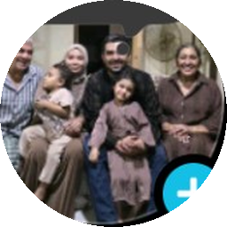

PHV DRIVER · CONTENT CREATOR
Shafiq
@shafiq.phv
Founder and builder of Shafiq PHV Hub, sharing driver experiences, practical PHV tools, AI adoption and the process of building useful technology in public.
View Shafiq on TikTok ↗You already have stories, experience and knowledge worth sharing. Meet drivers who are putting their PHV journeys online — and see how you could start creating too.

Founder and builder of Shafiq PHV Hub, sharing driver experiences, practical PHV tools, AI adoption and the process of building useful technology in public.
View Shafiq on TikTok ↗Founder of the PHV AI Adoption WhatsApp group and an AI TikTok monetisation trainer at BR Academy Global. Shares Singapore transport updates, driver costs and practical creator learning.
View Joel on TikTok ↗Start with what you know. Share a useful driving tip, a lesson from your day, a vehicle insight or a story that could help another driver. AI tools can help you brainstorm, structure a script and prepare captions — while your own experience remains the most important part.
Free PHV Creator Pathway is being prepared. It will start with self-help lessons, with optional courses and mentorship afterwards.
The profiles above are examples, not endorsements or guarantees of income. Content creation and monetisation take time, consistency and learning. Course enquiries should be made directly with the relevant educator.